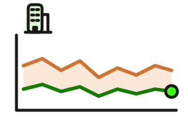

Unternehmensanleihen seit 1984
Mit einer Unternehmensanleihe leihst du einem Unternehmen Geld – für eine feste Laufzeit und zu einem festen Zins. Weil ein Unternehmen eher ausfallen kann als ein Staat, zahlt es meist mehr Zins; wie viel mehr, hängt vor allem von seiner Bonität ab. Der Vergleich unten zeigt Unternehmensanleihen deshalb nach Bonitätsklassen aus vier Ländern, alle mit 10 Jahren Laufzeit – so lassen sie sich neben die 10-jährigen Staatsanleihen legen.

Unternehmensanleihen · 1984 – 2026 · Stand: 17.09.2026
Renditen nach Bonität und Land seit 1984
Alle Reihen: 10 Jahre Laufzeit. Jahresdurchschnitte in der jeweiligen Landeswährung, ergänzt um den aktuellen Wert; die Fläche um jede Linie zeigt die Spanne des Jahres. Die Ratingskalen unterscheiden sich je Land – aussagekräftig ist vor allem der Vergleich jeder Reihe mit ihrer eigenen Geschichte.
Sechs Segmente im Überblick
Hoch, Tief und Ø: Jahresdurchschnitte seit Beginn der jeweiligen Reihe (frühestens 1984), ohne das laufende Jahr; Japan: noch kein volles Jahr
| Die Daten werden geladen … | ||||||||
Datenquellen und Methodik
Methodik. Das Schaubild zeigt sechs Segmente des Marktes für Unternehmensanleihen aus vier Volkswirtschaften als Jahresdurchschnitte seit 1984, soweit verfügbar, ergänzt um den jeweils aktuellen Wert – durchweg mit 10 Jahren Laufzeit: für die USA die Renditekurve hochwertiger Unternehmensanleihen des Finanzministeriums (AAA bis A, 10 Jahre), für Japan Unternehmensanleihen der Ratingklassen AA und A mit 10 Jahren Restlaufzeit (JSDA), für China die AAA-Unternehmensanleihekurve über 10 Jahre (ChinaBond) und für Australien Unternehmensanleihen der Ratingklassen A und BBB mit 10 Jahren Laufzeit (RBA). Japan und China werden börsentäglich aktualisiert, die USA und Australien monatlich. Alle Renditen gelten in der jeweiligen Landeswährung. Die Reihen beginnen unterschiedlich: die USA 1984, Australien 2005, China 2007. Für Japan liegen Jahresmittel erst für die Jahre vor, für die alle zwölf Monatsendwerte nachgeladen sind – die Historie bis 2002 füllt sich mit den täglichen Datenläufen schrittweise auf. Deutschland fehlt in diesem Vergleich: Die Bundesbank weist die Renditen inländischer Unternehmensanleihen nur über alle Laufzeiten zusammen aus, nicht für 10 Jahre. Die Ratings sind über Ländergrenzen nur eingeschränkt vergleichbar: Japanische Ratings (R&I) und erst recht chinesische fallen auf der heimischen Skala deutlich großzügiger aus als bei S&P oder Moody's – ein chinesisches AAA entspricht international etwa BBB oder darunter. Aussagekräftig ist daher vor allem der Vergleich jeder Reihe mit ihrer eigenen Geschichte und mit der 10-jährigen Staatsanleihe desselben Landes (Staatsanleihen seit 1970), weniger der Renditeabstand zwischen den Ländern. Die schattierte Fläche um jede Linie zeigt die Spanne des Jahres vom niedrigsten bis zum höchsten Monatswert.
Datenquellen. USA: U.S. Treasury, HQM Corporate Bond Yield Curve (Spot-Rendite 10 Jahre, monatlich, via FRED). Japan: Japan Securities Dealers Association (JSDA), Rating-Matrix der Referenzkurse für den außerbörslichen Anleihehandel – Durchschnittsrendite der von R&I mit AA bzw. A bewerteten Anleihen mit 10 Jahren Restlaufzeit (börsentäglich, seit 2002). China: ChinaBond (China Central Depository & Clearing), Renditekurve Unternehmensanleihen AAA, Punkt 10 Jahre (börsentäglich, seit 2006). Australien: Reserve Bank of Australia, Tabelle F3 – Anleihen nichtfinanzieller Unternehmen mit Rating A bzw. BBB, Zielrestlaufzeit 10 Jahre (monatlich, seit 2005). Jahresdurchschnitt = Mittel der zwölf Monatswerte; Ø, Hoch und Tief beziehen sich auf Jahresdurchschnitte des jeweils verfügbaren Zeitraums ab 1984.
Daten-Stand: 17.09.2026